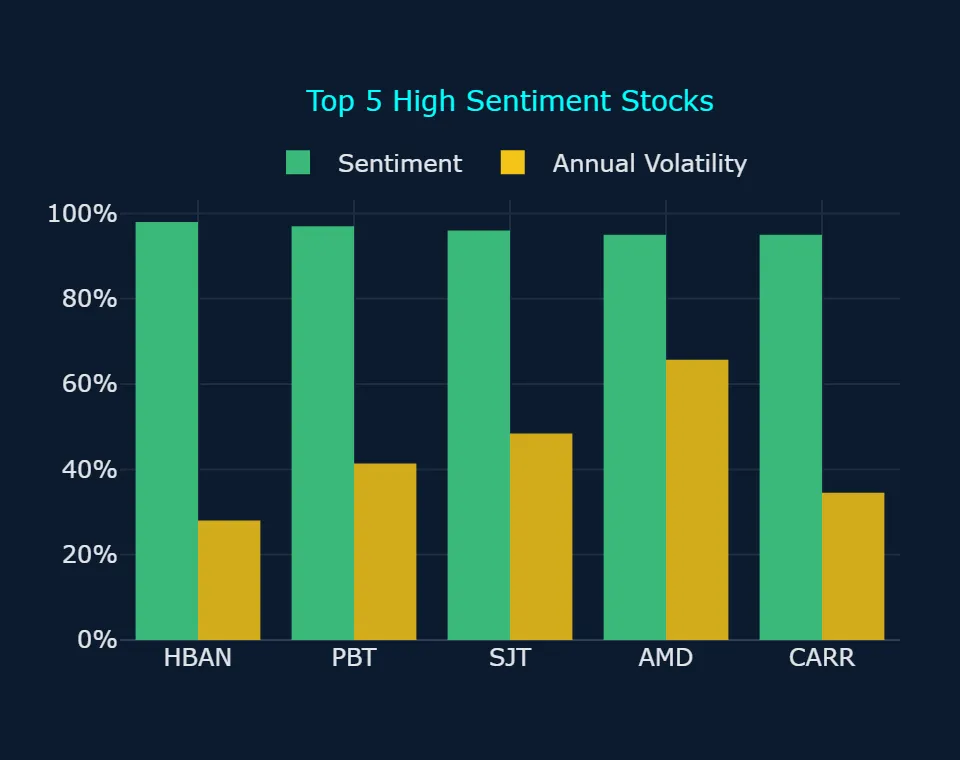
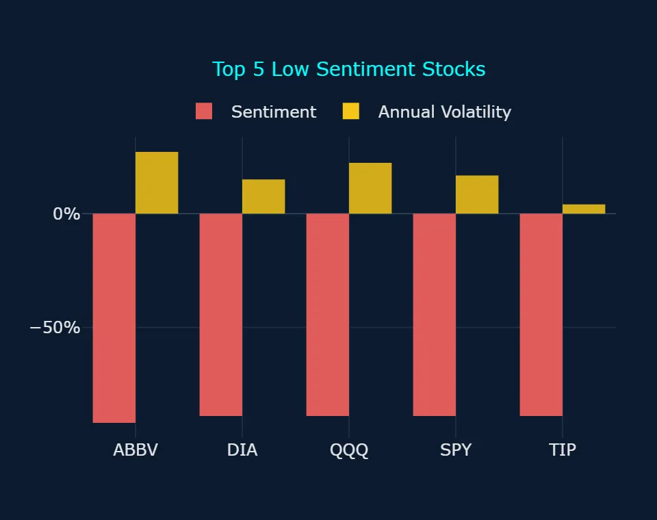
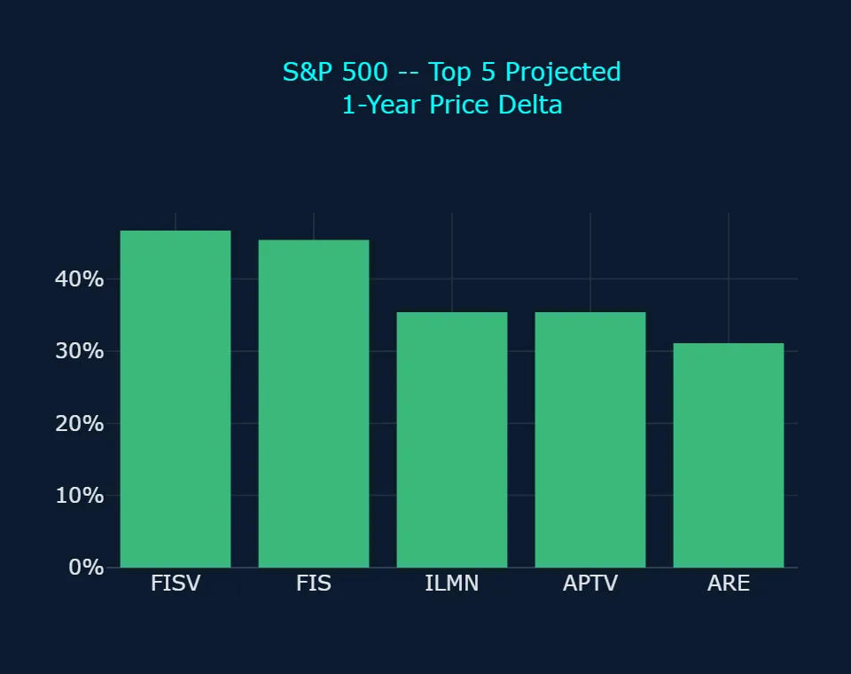
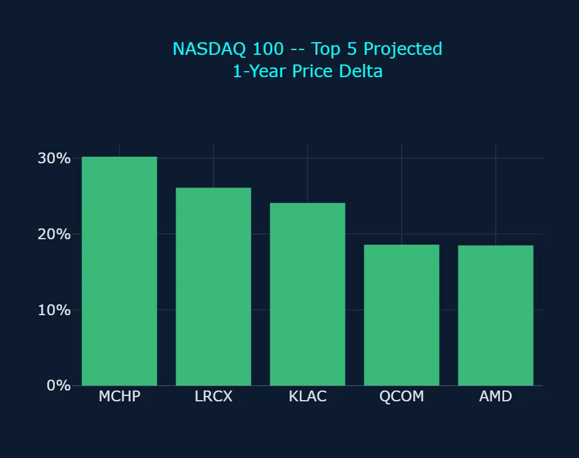
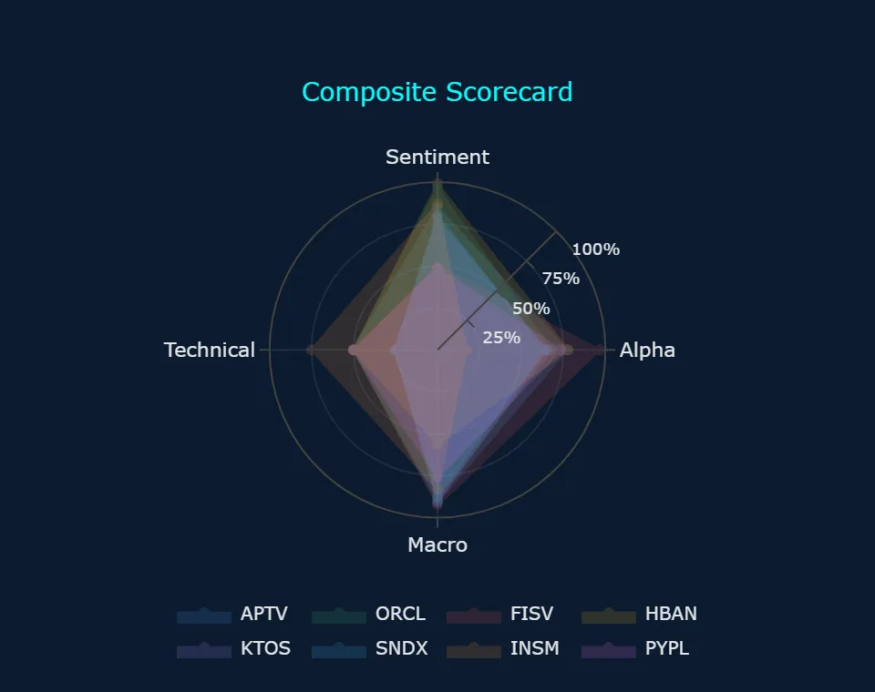
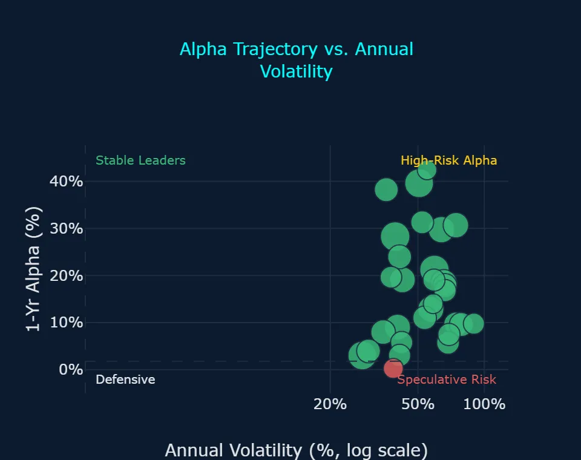
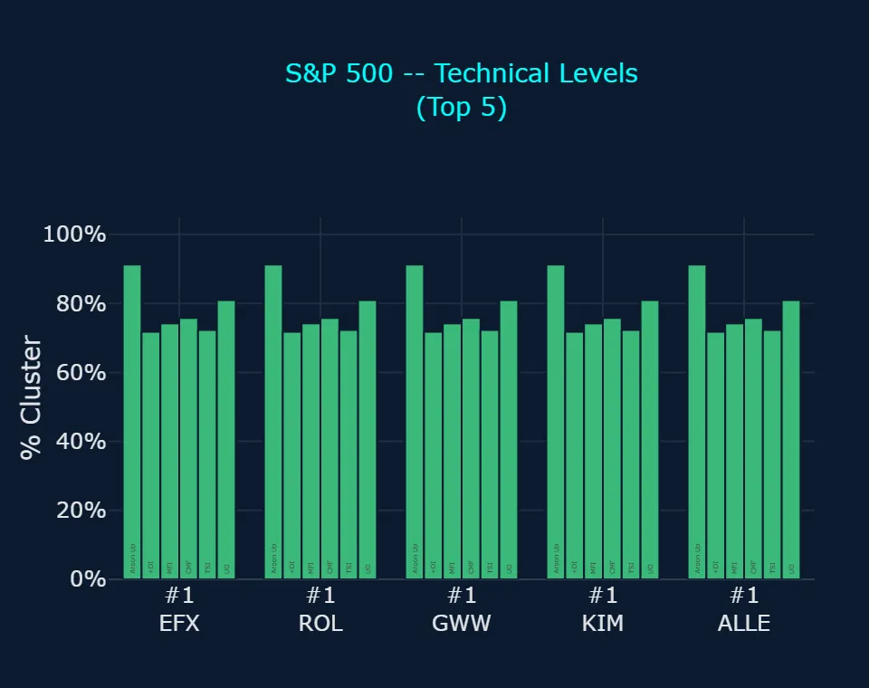
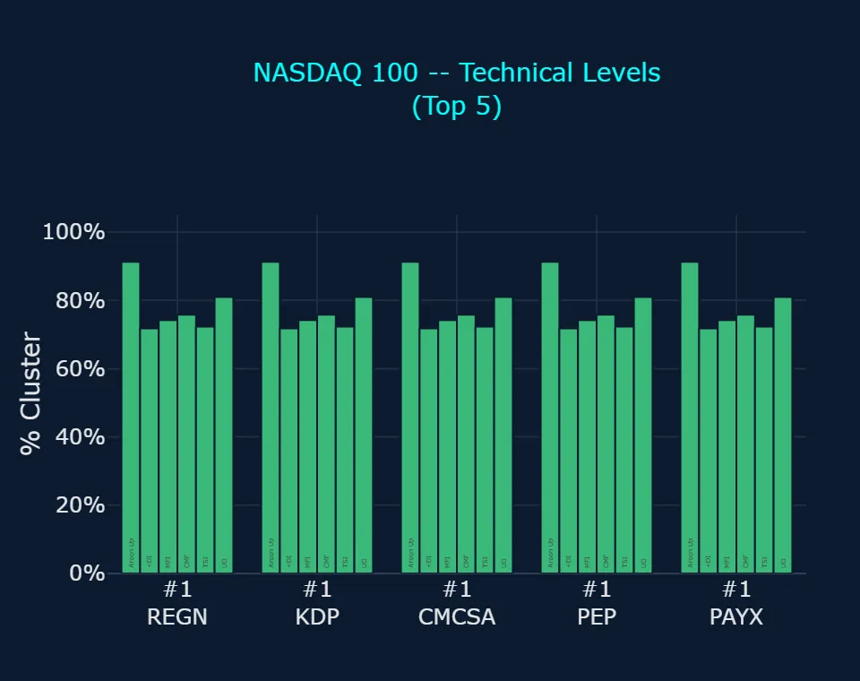
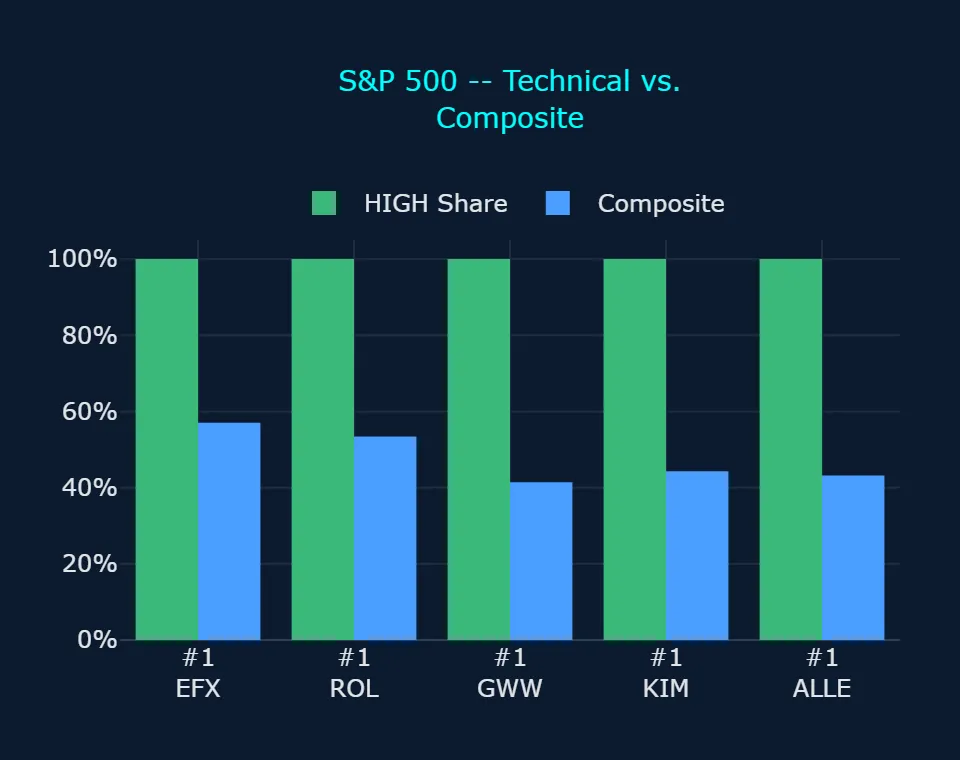
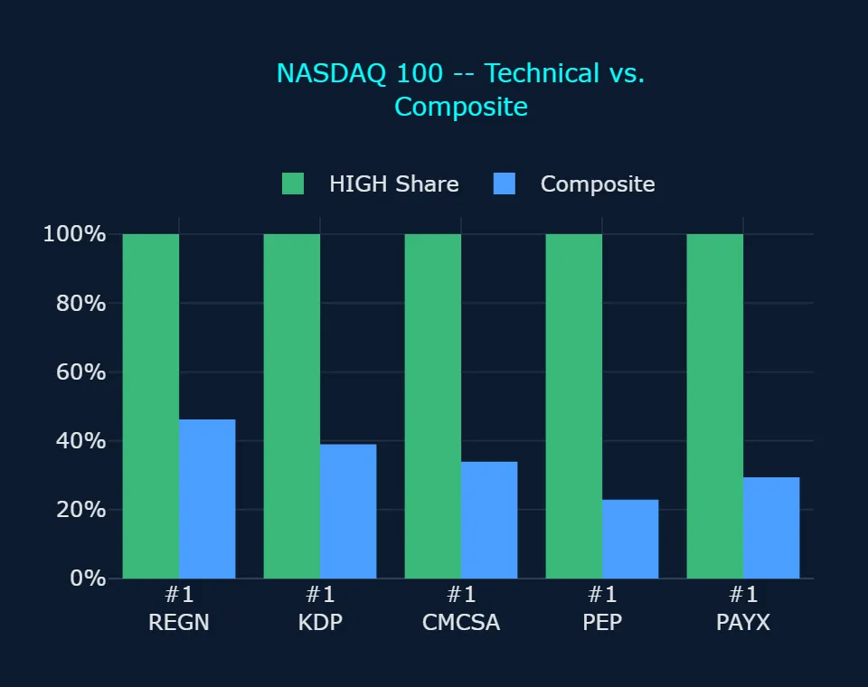

Zoonova AI: Pre-Market Quantitative Briefing – November 9, 2026
Session Quantitative Briefing: The Zoonova AI Intelligence Engine executes a hybrid architecture combining a proprietary Quad-Ensemble machine learning framework with Google Gemini Flash for real-time contextual synthesis and semantic macroeconomic grounding. The quantitative pipeline integrates four specialized estimators: Random Forest Regressor (RFR) for baseline structural stability, eXtreme Gradient Boosting (XGB) optimized for residual loss minimization, Categorical Boosting (CAT) for high-cardinality categorical signal processing, and Temporal Fusion Transformer (TFT) for multi-horizon price and volatility forecasting.
Zoonova AI: Pre-Market Momentum & Liquidity Report
1. QUANTITATIVE MODEL OVERVIEW & SIGNAL METRICS
Market intelligence and predictive projections in this report are generated using Zoonova's Quad-Ensemble machine learning framework, combining Random Forest Regressor [RFR], eXtreme Gradient Boosting [XGB], Categorical Boosting [CAT], and Temporal Fusion Transformer [TFT] models to project price targets and alpha probabilities. Market sentiment scoring is powered by VADER sentiment analysis, while structural breadth modeling and pattern shifts are captured through BIRCH clustering for anomaly detection.
- As of the 2026-11-06 close, the SPDR S&P 500 ETF Trust (SPY) traded at $735.29 with sentiment registered at -89.0% and annualized volatility of 16.79%, while the Quad-Ensemble model projects a 1-year target of $787.74, representing an implied price gain of +7.1% (Zoonova, 2026-11-06).
- The Invesco QQQ Trust Series 1 (QQQ) ended at $656.10 on 2026-11-06 with sentiment of -89.0% and annualized volatility of 22.45%, against a 1-year projected price target of $756.08, which implies an upside potential of +15.2% (Zoonova, 2026-11-06).
- The SPDR Dow Jones Industrial Average ETF (DIA) closed at $512.22 on 2026-11-06 with sentiment at -89.0% and annualized volatility of 15.13%, with projections indicating a 1-year target of $532.67, translating to a +4.0% implied change (Zoonova, 2026-11-06).
- Fixed income benchmark Vanguard Total Bond Market ETF (BND) stood at $71.59 on 2026-11-06 with neutral 0.0% sentiment and annualized volatility of 4.39%, with the 1-year model projecting $76.61, an implied gain of +7.0% (Zoonova, 2026-11-06).
- SPDR Gold Shares ETF (GLD) closed at $372.52 on 2026-11-06 with sentiment at -29.0% and annualized volatility of 24.68%, projecting a 1-year price of $390.03, reflecting an implied increase of +4.7% (Zoonova, 2026-11-06).
2. SENTIMENT INSIGHTS – TOP 5 HIGH & LOW
Top 5 High Sentiment Stocks
| Ticker | Company Name | Sentiment Score | Primary Catalyst / Driver |
|---|---|---|---|
| HBAN | Huntington Bancshares, Inc. | +98.0% | Huntington Bancshares drew strong investor optimism after StoneX Group sharply boosted its stake and the bank reported Q3 net interest margin expansion to 3.25% (MarketBeat, 2026-11-09). |
| PBT | Permian Basin Royalty Trust | +97.0% | Permian Basin Royalty Trust maintained positive investor sentiment behind continuous monthly cash distribution payments and steady Permian production (Permian Basin Royalty Trust, 2026-10-20). |
| SJT | San Juan Basin Royalty Trust | +96.0% | San Juan Basin Royalty Trust saw sustained retail yield demand and interest in its San Juan natural gas assets following recent monthly operational disclosures (San Juan Basin Royalty Trust, 2026-10-20). |
| AMD | Advanced Micro Devices Inc. | +95.0% | Advanced Micro Devices surged in market enthusiasm after reporting third-quarter revenue of $13.4 billion, lifted by a 97% year-over-year jump in Data Center sales to $8.5 billion (ServeTheHome, 2026-11-04). |
| CARR | Carrier Global Corp | +95.0% | Carrier Global generated high sentiment by posting an order backlog above $8.5 billion and a 300% expansion in data center cooling orders during Q3 (PR Newswire, 2026-10-29). |
Top 5 Low Sentiment Stocks
| Ticker | Company Name | Sentiment Score | Primary Friction / Risk Factor |
|---|---|---|---|
| ABBV | Abbvie Inc | -92.0% | AbbVie encountered depressed sentiment as ongoing Humira revenue erosion from biosimilar competition tempered optimism from raised full-year guidance (MarketBeat, 2026-11-03). |
| DIA* | SPDR Dow Jones Industrial Average ETF | -89.0% | SPDR Dow Jones Industrial Average ETF (DIA) was pressured by post-election political division and persistent industrial inflation concerns (MUFG Research, 2026-11-06). |
| QQQ* | Invesco QQQ Trust Series 1 | -89.0% | Invesco QQQ Trust Series 1 (QQQ) sentiment fell amid valuation caution and concerns over state-level regulatory hurdles for artificial intelligence infrastructure (The Motley Fool, 2026-11-09). |
| SPY* | SPDR S&P 500 ETF Trust | -89.0% | SPDR S&P 500 ETF Trust (SPY) absorbed broad selling pressure after the Federal Reserve held rates at 3.75% to 4.00% while highlighting sticky inflation (Federal Reserve, 2026-10-28). |
| TIP* | iShares TIPS Bond ETF | -89.0% | iShares TIPS Bond ETF (TIP) sentiment dropped as elevated real yields and expectations of higher-for-longer monetary policy constrained demand for inflation-protected debt (Crestwood Advisors, 2026-11-02). |
* ETF (exchange-traded fund)
3. ALPHA PROBABILITY & PRICE DELTA LEADERBOARD – 1-YEAR HORIZON
S&P 500 – Top 5 High Alpha Probability (1yr)
| Ticker | Current Price ($) | 1-Yr Target Price ($) | Alpha Probability (%) | Implied Excess Alpha (%) | 10%+ Alpha? |
|---|---|---|---|---|---|
| FISV | $62.88 | $92.26 | 95.45% | 39.58% | Both Yes |
| HBAN | $15.47 | $17.04 | 76.78% | 3.01% | Split |
| APTV | $39.44 | $53.40 | 76.05% | 28.26% | Both Yes |
| PYPL | $59.24 | $68.82 | 72.57% | 9.03% | Split |
| ORCL | $116.10 | $149.01 | 66.83% | 21.20% | Both Yes |
S&P 500 – Top 5 Price Delta + % Change (1yr)
| Ticker | Current Price ($) | 1-Yr Target Price ($) | Absolute Delta ($) | Projected 1-Yr % Change (%) | Implied Excess Alpha (%) |
|---|---|---|---|---|---|
| FISV | $62.88 | $92.26 | $29.38 | 46.72% | 39.58% |
| FIS | $28.73 | $41.76 | $13.03 | 45.35% | 38.21% |
| ILMN | $213.13 | $288.59 | $75.46 | 35.41% | 28.27% |
| APTV | $39.44 | $53.40 | $13.96 | 35.40% | 28.26% |
| ARE | $44.80 | $58.73 | $13.93 | 31.09% | 23.96% |
NASDAQ 100 – Top 5 High Alpha Probability (1yr)
| Ticker | Current Price ($) | 1-Yr Target Price ($) | Alpha Probability (%) | Implied Excess Alpha (%) | 10%+ Alpha? |
|---|---|---|---|---|---|
| PYPL | $59.24 | $68.82 | 72.57% | 9.03% | Split |
| CPRT | $31.95 | $35.50 | 53.26% | 3.98% | Split |
| DXCM | $79.41 | $89.66 | 30.18% | 5.76% | Both No |
| NFLX | $63.41 | $72.99 | 29.82% | 7.98% | Both No |
| MRVL | $141.20 | $164.83 | 26.45% | 9.60% | Both No |
NASDAQ 100 – Top 5 Price Delta + % Change (1yr)
| Ticker | Current Price ($) | 1-Yr Target Price ($) | Absolute Delta ($) | Projected 1-Yr % Change (%) | Implied Excess Alpha (%) |
|---|---|---|---|---|---|
| MCHP | $58.35 | $75.98 | $17.63 | 30.21% | 23.07% |
| LRCX | $200.44 | $252.85 | $52.41 | 26.15% | 19.02% |
| KLAC | $138.49 | $171.85 | $33.36 | 24.09% | 16.96% |
| QCOM | $165.41 | $196.20 | $30.79 | 18.61% | 11.48% |
| AMD | $449.04 | $532.04 | $83.00 | 18.48% | 11.35% |
4. REAL-TIME CONTEXTUAL ENRICHMENT
In the wake of the 2026 US midterm elections, which resulted in a divided Congress with Democrats taking control of both legislative chambers, broad market indices have grappled with shifting policy expectations and persistent monetary headwinds (MUFG Research, 2026-11-06). The Federal Open Market Committee maintained its federal funds rate target at 3.75% to 4.00% on 2026-10-28 in a 10 to 2 vote, with two dissenting members voting to raise rates by 25 basis points due to stubborn inflation (Federal Reserve, 2026-10-28). With headline inflation at 3.7% and core PCE at 3.1%, expectations of higher-for-longer interest rates continue to pressure broader index sentiment, as reflected in identical sentiment scores of -89.0% for SPDR S&P 500 ETF Trust (SPY) and Invesco QQQ Trust Series 1 (QQQ) as of 2026-11-06 (Crestwood Advisors, 2026-11-02; Zoonova, 2026-11-06). Concurrently, BIRCH clustering confirmed widespread defensive breadth, registering 70 low-severity bearish trend anomalies across 62 stocks and 8 ETFs, including major sector benchmarks such as Technology Select Sector SPDR ETF (XLK) and Vanguard Energy ETF (VDE).
Despite broad index pressure, individual corporate earnings results created pronounced sentiment divergence. Advanced Micro Devices Inc. attained +95.0% sentiment after delivering third-quarter revenue of $13.4 billion, up 45% year-over-year, alongside a 97% surge in Data Center sales to $8.5 billion (ServeTheHome, 2026-11-04). However, Zoonova models registered a mixed technical posture for AMD, combining a Bullish Short-Term (3d) Trend Anomaly with a Bearish Long-Term (1w) Trend Anomaly as market participants weighed regulatory and power constraints on data center infrastructure (The Motley Fool, 2026-11-09). Similarly, Carrier Global Corp logged +95.0% sentiment following a third-quarter performance that delivered organic orders growth of 35% and a data center order increase of 300%, lifting backlog over $8.5 billion (PR Newswire, 2026-10-29). In banking, Huntington Bancshares Inc. reached +98.0% sentiment, bolstered by notable institutional accumulation and a 4 basis point quarterly increase in net interest margin to 3.25% (MarketBeat, 2026-11-09).
In the S&P 500 High Alpha Probability universe, select equities demonstrated strong model convergence. Fiserv, Inc. holds the highest Alpha Rating on the Main Scorecard at 96.5, supported by Macro Alignment of 92.5 and Composite of 72.5, with both models expecting it to beat the benchmark by 10%+ based on a 1-year Alpha Probability of 95.45% and projected 1-year alpha of +39.58% (Zoonova, 2026-11-06). Marketplace commentary has similarly highlighted Fiserv as an attractive turnaround candidate benefiting from fintech transaction growth (TradingView, 2026-11-03). Aptiv PLC posted the highest Composite on the Main Scorecard at 74.9, alongside Macro Alignment of 90.5 and Alpha Rating of 76.9, where both models expect it to beat the benchmark by 10%+ after third-quarter adjusted EPS of $1.42 surpassed analyst expectations of $1.33 on $3.2 billion in revenue, despite conservative forward guidance on European auto production (Investing.com, 2026-11-03). For other candidates like PayPal Holdings Inc, the two models split, contrasting an Alpha Probability of 72.57% against a projected 1-year alpha of +9.03% (Zoonova, 2026-11-06).
5. ANOMALY DETECTION SCANNER
Direction: Bearish
Moderate Severity (6 stocks)
- EXPE – Expedia Group Inc: Bearish Short-Term (3d) Trend Anomaly, Bearish Long-Term (1w) Trend Anomaly
- HALO – Halozyme Therapeutics Inc.: Bearish Short-Term (3d) Trend Anomaly, Bearish Long-Term (1w) Trend Anomaly
- MCHP – Microchip Technology, Inc.: Bearish Short-Term (3d) Trend Anomaly, Bearish Long-Term (1w) Trend Anomaly
- NTRA – Natera Inc: Bearish Short-Term (3d) Trend Anomaly, Bearish Long-Term (1w) Trend Anomaly
- PBYI – Puma Biotechnology Inc: Bearish Short-Term (3d) Trend Anomaly, Bearish Long-Term (1w) Trend Anomaly
- RIGL – Rigel Pharmaceuticals: Bearish Short-Term (3d) Trend Anomaly, Bearish Long-Term (1w) Trend Anomaly
Low Severity (70 names: 62 stocks, 8 ETFs)
- ADI – Analog Devices Inc.: Bearish Long-Term (1w) Trend Anomaly
- AMAT – Applied Materials Inc.: Bearish Long-Term (1w) Trend Anomaly
- AME – Ametek Inc: Bearish Long-Term (1w) Trend Anomaly
- ARQT – Arcutis Biotherapeutics Inc: Bearish Long-Term (1w) Trend Anomaly
- AVGO – Broadcom Inc: Bearish Long-Term (1w) Trend Anomaly
- BKR – Baker Hughes Co: Bearish Long-Term (1w) Trend Anomaly
- CAT – Caterpillar Inc.: Bearish Long-Term (1w) Trend Anomaly
- CMI – Cummins Inc.: Bearish Long-Term (1w) Trend Anomaly
- CRWD – Crowdstrike Holdings Inc: Bearish Long-Term (1w) Trend Anomaly
- CSCO – Cisco Systems, Inc.: Bearish Long-Term (1w) Trend Anomaly
- CSX – CSX Corp.: Bearish Short-Term (3d) Trend Anomaly
- DDOG – Datadog Inc: Bearish Long-Term (1w) Trend Anomaly
- DKNG – DraftKings Inc.: Bearish Short-Term (3d) Trend Anomaly
- DVN – Devon Energy Corp.: Bearish Long-Term (1w) Trend Anomaly
- EFV* – iShares MSCI EAFE Value ETF: Bearish Long-Term (1w) Trend Anomaly
- EXPD – Expeditors International Of Washington, Inc.: Bearish Long-Term (1w) Trend Anomaly
- FANG – Diamondback Energy Inc: Bearish Long-Term (1w) Trend Anomaly
- FTNT – Fortinet Inc: Bearish Long-Term (1w) Trend Anomaly
- GH – Guardant Health Inc: Bearish Long-Term (1w) Trend Anomaly
- GLW – Corning, Inc.: Bearish Long-Term (1w) Trend Anomaly
- HII – Huntington Ingalls Industries Inc: Bearish Long-Term (1w) Trend Anomaly
- HPE – Hewlett Packard Enterprise Co: Bearish Long-Term (1w) Trend Anomaly
- IRM – Iron Mountain Inc.: Bearish Long-Term (1w) Trend Anomaly
- JCI – Johnson Controls International plc: Bearish Long-Term (1w) Trend Anomaly
- KEX – Kirby Corp.: Bearish Long-Term (1w) Trend Anomaly
- KEYS – Keysight Technologies Inc: Bearish Long-Term (1w) Trend Anomaly
- KMI – Kinder Morgan Inc: Bearish Long-Term (1w) Trend Anomaly
- KTOS – Kratos Defense & Security Solutions Inc: Bearish Long-Term (1w) Trend Anomaly
- KURA – Kura Oncology Inc: Bearish Long-Term (1w) Trend Anomaly
- LMT – Lockheed Martin Corp.: Bearish Long-Term (1w) Trend Anomaly
- MNST – Monster Beverage Corp.: Bearish Short-Term (3d) Trend Anomaly
- MPC – Marathon Petroleum Corp: Bearish Long-Term (1w) Trend Anomaly
- MRVL – Marvell Technology Inc: Bearish Long-Term (1w) Trend Anomaly
- MTUM* – iShares MSCI USA Momentum Factor ETF: Bearish Long-Term (1w) Trend Anomaly
- NRIX – Nurix Therapeutics Inc: Bearish Long-Term (1w) Trend Anomaly
- NSC – Norfolk Southern Corp.: Bearish Long-Term (1w) Trend Anomaly
- NTAP – Netapp Inc: Bearish Long-Term (1w) Trend Anomaly
- NUE – Nucor Corp.: Bearish Long-Term (1w) Trend Anomaly
- NVDA – NVIDIA Corp: Bearish Long-Term (1w) Trend Anomaly
- NWS – News Corp: Bearish Long-Term (1w) Trend Anomaly
- NWSA – News Corp: Bearish Long-Term (1w) Trend Anomaly
- OKE – Oneok Inc.: Bearish Long-Term (1w) Trend Anomaly
- OKTA – Okta Inc: Bearish Long-Term (1w) Trend Anomaly
- PANW – Palo Alto Networks Inc: Bearish Long-Term (1w) Trend Anomaly
- PGEN – Precigen Inc: Bearish Long-Term (1w) Trend Anomaly
- PLTR – Palantir Technologies Inc: Bearish Long-Term (1w) Trend Anomaly
- PSX – Phillips 66: Bearish Long-Term (1w) Trend Anomaly
- PTGX – Protagonist Therapeutics Inc: Bearish Long-Term (1w) Trend Anomaly
- QUAL* – iShares MSCI USA Quality Factor ETF: Bearish Long-Term (1w) Trend Anomaly
- ROK – Rockwell Automation Inc: Bearish Long-Term (1w) Trend Anomaly
- SNDX – Syndax Pharmaceuticals Inc: Bearish Long-Term (1w) Trend Anomaly
- SRE – Sempra: Bearish Long-Term (1w) Trend Anomaly
- STX – Seagate Technology Holdings Plc: Bearish Long-Term (1w) Trend Anomaly
- SUPN – Supernus Pharmaceuticals Inc: Bearish Long-Term (1w) Trend Anomaly
- TER – Teradyne, Inc.: Bearish Long-Term (1w) Trend Anomaly
- TRMB – Trimble Inc: Bearish Long-Term (1w) Trend Anomaly
- TWST – Twist Bioscience Corp: Bearish Long-Term (1w) Trend Anomaly
- TXN – Texas Instruments Inc.: Bearish Long-Term (1w) Trend Anomaly
- URGN – UroGen Pharma Ltd: Bearish Long-Term (1w) Trend Anomaly
- URI – United Rentals, Inc.: Bearish Long-Term (1w) Trend Anomaly
- VCYT – Veracyte Inc: Bearish Long-Term (1w) Trend Anomaly
- VDE* – Vanguard Energy ETF: Bearish Long-Term (1w) Trend Anomaly
- VGT* – Vanguard Information Technology ETF: Bearish Long-Term (1w) Trend Anomaly
- VLO – Valero Energy Corp.: Bearish Long-Term (1w) Trend Anomaly
- VLUE* – iShares MSCI USA Value Factor ETF: Bearish Long-Term (1w) Trend Anomaly
- WDC – Western Digital Corp.: Bearish Long-Term (1w) Trend Anomaly
- WMB – Williams Cos Inc: Bearish Long-Term (1w) Trend Anomaly
- XLE* – The Energy Select Sector SPDR Fund: Bearish Long-Term (1w) Trend Anomaly
- XLK* – Technology Select Sector SPDR ETF: Bearish Long-Term (1w) Trend Anomaly
- XOM – Exxon Mobil Corp.: Bearish Long-Term (1w) Trend Anomaly
Direction: Bullish
Moderate Severity (2 stocks)
- ABNB – Airbnb Inc: Bullish Short-Term (3d) Trend Anomaly, Bullish Long-Term (1w) Trend Anomaly
- RYTM – Rhythm Pharmaceuticals Inc.: Bullish Short-Term (3d) Trend Anomaly, Bullish Long-Term (1w) Trend Anomaly
Low Severity (23 names: 21 stocks, 2 ETFs)
- ANET – Arista Networks Inc: Bullish Short-Term (3d) Trend Anomaly
- ARKQ* – ARK Autonomous Technology & Robotics ETF: Bullish Short-Term (3d) Trend Anomaly
- BEN – Franklin Resources, Inc.: Bullish Short-Term (3d) Trend Anomaly
- COGT – Cogent Biosciences Inc: Bullish Short-Term (3d) Trend Anomaly
- CRL – Charles River Laboratories International Inc.: Bullish Short-Term (3d) Trend Anomaly
- FLGT – Fulgent Genetics Inc: Bullish Short-Term (3d) Trend Anomaly
- GDX* – VanEck Gold Miners ETF: Bullish Long-Term (1w) Trend Anomaly
- INSM – Insmed Inc: Bullish Short-Term (3d) Trend Anomaly
- INTC – Intel Corp.: Bullish Short-Term (3d) Trend Anomaly
- KOD – Kodiak Sciences Inc: Bullish Short-Term (3d) Trend Anomaly
- MRNA – Moderna Inc: Bullish Long-Term (1w) Trend Anomaly
- NBIX – Neurocrine Biosciences, Inc.: Bullish Long-Term (1w) Trend Anomaly
- NEM – Newmont Corp: Bullish Long-Term (1w) Trend Anomaly
- NET – Cloudflare Inc: Bullish Short-Term (3d) Trend Anomaly
- NRG – NRG Energy Inc.: Bullish Short-Term (3d) Trend Anomaly
- OVID – Ovid Therapeutics Inc: Bullish Short-Term (3d) Trend Anomaly
- RVMD – Revolution Medicines Inc: Bullish Short-Term (3d) Trend Anomaly
- STE – Steris Plc: Bullish Long-Term (1w) Trend Anomaly
- TPR – Tapestry Inc: Bullish Long-Term (1w) Trend Anomaly
- TTWO – Take-Two Interactive Software, Inc.: Bullish Long-Term (1w) Trend Anomaly
- U – Unity Software Inc: Bullish Long-Term (1w) Trend Anomaly
- UHS – Universal Health Services, Inc.: Bullish Long-Term (1w) Trend Anomaly
- XNCR – Xencor Inc: Bullish Long-Term (1w) Trend Anomaly
Direction: Mixed
Moderate Severity (7 stocks)
- AMD – Advanced Micro Devices Inc.: Bullish Short-Term (3d) Trend Anomaly, Bearish Long-Term (1w) Trend Anomaly
- ESLT – Elbit Systems Ltd.: Bullish Short-Term (3d) Trend Anomaly, Bearish Long-Term (1w) Trend Anomaly
- KLAC – KLA Corp.: Bullish Short-Term (3d) Trend Anomaly, Bearish Long-Term (1w) Trend Anomaly
- LRCX – Lam Research Corp.: Bullish Short-Term (3d) Trend Anomaly, Bearish Long-Term (1w) Trend Anomaly
- MU – Micron Technology Inc.: Bullish Short-Term (3d) Trend Anomaly, Bearish Long-Term (1w) Trend Anomaly
- PWR – Quanta Services, Inc.: Bullish Short-Term (3d) Trend Anomaly, Bearish Long-Term (1w) Trend Anomaly
- TDY – Teledyne Technologies Inc: Bullish Short-Term (3d) Trend Anomaly, Bearish Long-Term (1w) Trend Anomaly
* ETF (exchange-traded fund)
6. STRATEGIC INVESTMENT ASSESSMENT
- Market breadth shows pronounced structural dispersion: BIRCH clustering registered 76 total bearish anomalies (6 moderate severity stocks, plus 70 low severity names consisting of 62 stocks and 8 ETFs) compared to only 25 bullish anomalies (2 moderate severity stocks, plus 23 low severity names consisting of 21 stocks and 2 ETFs) and 7 mixed moderate severity stocks, indicating broad-based sector fatigue that favors selective stock picking over unhedged index beta.
- Within the Main Scorecard, high-conviction allocations concentrate in Aptiv PLC (APTV) with the highest Composite of 74.9 and Macro Alignment of 90.5, Oracle Corp. (ORCL) with a Composite of 74.7 and Macro Alignment of 88.7, and Fiserv, Inc. (FISV) with a Composite of 72.5 and the highest Alpha Rating of 96.5, where both models expect each company to beat the benchmark by 10%+.
- Mega-cap technology exhibits compressed forward alpha on the Tech Stock Scorecard, where Apple Inc. (AAPL) holds a Composite of 21.1 with an Alpha Rating of 0.6, Alphabet Inc. (GOOGL) posts a Composite of 30.9, and NVIDIA Corp (NVDA) carries a Composite of 32.7 alongside a Bearish Long-Term (1w) Trend Anomaly, signaling limited excess return headroom despite strong historical index weighting.
- For names exhibiting model divergence such as Advanced Micro Devices Inc. (AMD) on the Tech Stock Scorecard, where the two models split and BIRCH clustering registered both a Bullish Short-Term (3d) Trend Anomaly and a Bearish Long-Term (1w) Trend Anomaly, investors should size positions conservatively to account for near-term semiconductor volatility (annualized volatility of 65.71%).
- Capital preservation strategies should balance idiosyncratic equity exposure with fixed income ballast, utilizing the Vanguard Total Bond Market ETF (BND), which presents a low annualized volatility of 4.39% and a Quad-Ensemble projected 1-year price of $76.61, representing a steady implied gain of +7.0% (Zoonova, 2026-11-06).
7. STOCK SCORECARD
Main Scorecard
| Ticker | Composite (%) | Alpha Rating | 10%+ Alpha? | Projected 1-Yr Change (%) | Street Consensus (Upside) | Next Earnings | Sentiment Rating | Technical Signal | Macro Alignment | Anomaly Flag | Catalyst / Risk | Market Cap | EPS Revisions (30d) | Short Interest / DTC | Options Flow | Earnings Surprise (4Q) | Bias |
|---|---|---|---|---|---|---|---|---|---|---|---|---|---|---|---|---|---|
| APTV | 74.9% | 76.9 | Both Yes | +35.4% | Buy (+63.1%) | 2027-02-04 | 85.0 | 50.0 | 90.5 | None | Automaker Production Volatility | $8.0B | Downward (-7.8%) | 3.8% / 3.1 DTC | Neutral / Mixed | 4/4 Beats (+4.1% avg) | Bullish |
| ORCL | 74.7% | 67.6 | Both Yes | +28.3% | Buy (+108.9%) | 2026-12-10 (in 31d) | 96.5 | 50.0 | 88.7 | None | Cloud Contract Momentum | $351.1B | Upward (+2.1%) | 1.8% / 2.3 DTC | Bullish (Call Skew) | 4/4 Beats | Bullish |
| FISV | 72.5% | 96.5 | Both Yes | +46.7% | Hold (-2.3%) | 2027-02-09 | 50.0 | 50.0 | 92.5 | None | Clover Growth Deceleration | $33.5B | Neutral/Flat (0.0%) | 2.9% / 2.4 DTC | Neutral / Mixed | 3/4 Beats | Bullish |
| HBAN | 71.7% | 77.7 | Split | +10.1% | Buy (+21.4%) | 2027-01-28 | 99.0 | 50.0 | 56.0 | None | Net Interest Margin | $31.2B | Downward (-5.0%) | 2.4% / 2.1 DTC | Neutral / Mixed | 3/4 Beats | Bullish |
| KTOS | 63.4% | 64.8 | Both Yes | +36.9% | Buy (+132.8%) | 2027-02-23 | 78.0 | 25.0 | 90.8 | Bearish (1w) | Hypersonics Backlog Expansion | $6.6B | Upward (+8.5%) | 7.1% / 4.8 DTC | Bullish (Call Skew) | 3/4 Beats | Neutral |
| SNDX | 62.8% | 63.2 | Both Yes | +25.6% | Strong Buy (+290.7%) | 2027-02-25 | 80.5 | 25.0 | 87.3 | Bearish (1w) | Revuforj Leukemia Launch | $859.0M | Downward (-4.1%) | 26.0% / 8.5 DTC | Unusual Volume Detected | 2/4 Beats | Neutral |
| INSM | 62.2% | 17.1 | Split | +20.0% | Strong Buy (+69.7%) | 2027-02-24 | 87.0 | 75.0 | 83.0 | Bullish (3d) | Brinsupri Commercial Traction | $25.1B | Upward (+6.8%) | 4.5% / 3.2 DTC | Bullish (Call Skew) | 3/4 Beats | Neutral |
| PYPL | 61.8% | 73.4 | Split | +16.2% | Hold (-3.5%) | 2027-02-09 | 48.5 | 50.0 | 76.0 | None | Branded Checkout Deceleration | $49.2B | Upward (+1.4%) | 3.2% / 2.6 DTC | Neutral / Mixed | 4/4 Beats | Neutral |
| SUPN | 61.4% | 48.4 | Split | +26.2% | Buy (+137.0%) | 2027-02-25 | 92.0 | 25.0 | 87.9 | Bearish (1w) | Indivior Merger Integration | $2.4B | Downward (-8.3%) | 6.2% / 4.5 DTC | Neutral / Mixed | 3/4 Beats | Neutral |
| U | 59.4% | 33.1 | Split | +37.8% | Buy (+9.4%) | 2027-02-25 | 50.0 | 75.0 | 91.2 | Bullish (1w) | Vector Ad Growth | $22.9B | Upward (+12.3%) | 8.4% / 3.9 DTC | Bullish (Call Skew) | 3/4 Beats | Neutral |
| INTC | 56.4% | 16.4 | Both No | +16.8% | Hold (+61.9%) | 2027-01-28 | 69.0 | 75.0 | 77.2 | Bullish (3d) | Client Chip Slump | $299.1B | Downward (-14.0%) | 3.3% / 2.1 DTC | Neutral / Mixed | 2/4 Beats | Neutral |
| NFLX | 56.3% | 30.2 | Both No | +15.1% | Buy (+34.0%) | 2027-01-19 | 79.5 | 50.0 | 74.5 | None | Ad Revenue Deceleration | $260.4B | Downward (-3.2%) | 1.9% / 1.8 DTC | Neutral / Mixed | 3/4 Beats | Neutral |
| KURA | 54.0% | 41.9 | Split | +25.0% | Strong Buy (+338.1%) | 2026-11-10 (in 1d) | 71.0 | 25.0 | 87.0 | Bearish (1w) | Menin Inhibitor Data | $677.0M | Neutral/Flat (0.0%) | 11.2% / 6.4 DTC | Bullish (Call Skew) | 2/4 Beats | Neutral |
| FIS | 53.8% | 60.0 | Both Yes | +45.4% | Hold (+35.1%) | 2027-02-24 | 19.5 | 50.0 | 92.2 | None | Guidance Cut Overhang | $16.8B | Downward (-11.4%) | 3.4% / 2.8 DTC | Bearish (Put Heavy) | 2/4 Beats | Bearish |
| MRVL | 53.8% | 26.8 | Both No | +16.7% | Strong Buy (+119.6%) | 2026-12-01 (in 22d) | 96.5 | 25.0 | 77.0 | Bearish (1w) | Optical Acquisition Dilution | $123.8B | Upward (+4.2%) | 2.8% / 1.7 DTC | Bearish (Put Heavy) | 4/4 Beats | Neutral |
| ARE | 53.5% | 37.2 | Split | +31.1% | Hold (+8.3%) | 2027-01-25 | 47.5 | 50.0 | 89.7 | None | Life Science Softness | $7.8B | Downward (-6.5%) | 4.1% / 3.8 DTC | Neutral / Mixed | 2/4 Beats | Neutral |
| CPRT | 53.4% | 53.9 | Split | +11.1% | Buy (+18.6%) | 2026-11-19 (in 10d) | 50.0 | 50.0 | 61.1 | None | Salvage Volume Pricing | $29.6B | Downward (-2.5%) | 2.4% / 3.0 DTC | Neutral / Mixed | 2/4 Beats | Neutral |
| DKNG | 50.2% | 47.9 | Split | +38.4% | Buy (+67.4%) | 2027-02-12 | 45.0 | 25.0 | 91.5 | Bearish (3d) | Prediction Market Spend | $9.2B | Downward (-15.2%) | 5.8% / 2.9 DTC | Bearish (Put Heavy) | 1/4 Beats | Neutral |
| GLW | 37.6% | 35.5 | Split | +21.1% | Buy (+69.6%) | 2027-01-27 | 15.5 | 25.0 | 83.9 | Bearish (1w) | Optical Data Expansion | $91.4B | Neutral/Flat (0.0%) | 2.1% / 2.0 DTC | Bullish (Call Skew) | 4/4 Beats | Bearish |
| QUAL* | 37.3% | 23.3 | Split | +49.5% | N/A (ETF) | N/A (ETF) | 22.0 | 25.0 | 92.8 | Bearish (1w) | Factor Quality Rebalancing | $47.6B | N/A (ETF) | 1.2% / 1.5 DTC | Neutral / Mixed | N/A (ETF) | Bearish |
* ETF (exchange-traded fund)
10%+ Alpha? – whether Zoonova's two 1-year models (alpha probability and price target) expect the stock to beat the benchmark by 10%+. “Both No” is common: 10% is a high bar.
Tech Stock Scorecard
| Ticker | Composite (%) | Alpha Rating | 10%+ Alpha? | Projected 1-Yr Change (%) | Street Consensus (Upside) | Next Earnings | Sentiment Rating | Technical Signal | Macro Alignment | Anomaly Flag | Catalyst / Risk | Market Cap | EPS Revisions (30d) | Short Interest / DTC | Options Flow | Earnings Surprise (4Q) | Bias |
|---|---|---|---|---|---|---|---|---|---|---|---|---|---|---|---|---|---|
| META | 56.7% | 14.5 | Both No | +16.9% | Strong Buy (+39.3%) | 2027-01-27 | 97.5 | 50.0 | 77.5 | None | Infrastructure Capex Expansion | $1.56T | Upward (+6.2%) | 1.5% / 1.8 DTC | Bullish (Call Skew) | 4/4 Beats | Neutral |
| INTC | 56.4% | 16.4 | Both No | +16.8% | Hold (+61.9%) | 2027-01-28 | 69.0 | 75.0 | 77.2 | Bullish (3d) | Client Chip Slump | $299.1B | Downward (-14.0%) | 3.3% / 2.1 DTC | Neutral / Mixed | 2/4 Beats | Neutral |
| AMD | 53.3% | 1.1 | Split | +18.5% | Strong Buy (+46.9%) | 2027-02-02 | 97.5 | 50.0 | 80.3 | Bullish (3d), Bearish (1w) | Server Processor Demand | $736.5B | Upward (+9.6%) | 2.7% / 1.6 DTC | Bullish (Call Skew) | 4/4 Beats | Neutral |
| AMZN | 41.5% | 0.6 | Both No | +7.0% | Strong Buy (+26.1%) | 2027-02-04 | 94.5 | 50.0 | 26.1 | None | Cloud Demand Reacceleration | $2.80T | Upward (+5.1%) | 1.3% / 1.6 DTC | Bullish (Call Skew) | 4/4 Beats | Neutral |
| NVDA | 32.7% | 0.8 | Both No | +8.7% | Strong Buy (+75.3%) | 2026-11-17 (in 8d) | 70.0 | 25.0 | 43.8 | Bearish (1w) | Blackwell Ramp Momentum | $4.50T | Upward (+11.5%) | 1.2% / 1.1 DTC | Bullish (Call Skew) | 4/4 Beats (+6.8% avg) | Bearish |
| AVGO | 32.4% | 3.1 | Both No | +10.4% | Strong Buy (+81.6%) | 2026-12-10 (in 31d) | 55.0 | 25.0 | 57.4 | Bearish (1w) | Custom Accelerator Bookings | $1.40T | Upward (+14.2%) | 1.8% / 1.5 DTC | Bullish (Call Skew) | 4/4 Beats | Bearish |
| MSFT | 31.9% | 0.3 | Both No | +4.9% | Strong Buy (+19.9%) | 2027-01-26 | 69.0 | 50.0 | 10.4 | None | Azure Cloud Acceleration | $3.94T | Upward (+4.8%) | 0.9% / 1.5 DTC | Bullish (Call Skew) | 4/4 Beats | Bearish |
| TSLA | 31.8% | 1.2 | Both No | +7.5% | Hold (+15.7%) | 2027-02-03 | 50.0 | 50.0 | 32.4 | None | Autonomous Software Scale | $1.42T | Downward (-4.5%) | 3.1% / 1.9 DTC | Neutral / Mixed | 2/4 Beats | Bearish |
| GOOGL | 30.9% | 6.0 | Both No | +9.5% | Strong Buy (+40.6%) | 2027-01-28 | 25.5 | 50.0 | 51.4 | None | Cloud Growth Acceleration | $3.50T | Upward (+7.4%) | 1.4% / 1.7 DTC | Bullish (Call Skew) | 4/4 Beats | Bearish |
| AAPL | 21.1% | 0.6 | Both No | +4.8% | Buy (-1.0%) | 2027-02-04 | 25.5 | 50.0 | 10.1 | None | Services Margin Strength | $4.98T | Upward (+3.2%) | 1.1% / 1.4 DTC | Neutral / Mixed | 4/4 Beats | Bearish |
| SPCX | N/H | N/H | N/A | N/A | Buy | 2027-01-22 | N/H | N/H | N/H | None | Launch Manifest Expansion | $1.84T | Upward (+15.0%) | 2.5% / 1.8 DTC | Bullish (Call Skew) | 1/4 Beats | N/A |
N/H: no ML scores yet (insufficient trading history for the models).
Search-grounded columns (Street Consensus (Upside), Next Earnings, Catalyst / Risk, Market Cap, EPS Revisions (30d), Short Interest / DTC, Options Flow, Earnings Surprise (4Q)): MarketBeat, Stock Analysis, TipRanks, Investing.com, BlackRock (sources dated 2026-10-13 to 2026-11-09).






Educational purposes only. Not investment advice.
Zoonova AI: Pre-Market Technical Analysis Report
Top-tier technicals sweep ranked S&P 500 and NASDAQ 100 leaders, but multi-factor composite divergence remains widespread.
1. 6 CORE INDICATORS
Indicator levels (LOW / MEDIUM / HIGH) and % Cluster come from Zoonova's BIRCH model (Balanced Iterative Reducing and Clustering using Hierarchies), an unsupervised machine-learning clustering model used for pattern recognition. Each indicator is clustered across the stock universe; % Cluster is the centroid of the cluster a stock falls in.
| Indicator | Category | Role |
|---|---|---|
| ARUPAroon Up | Trend Direction | Recency of the highest high in the lookback window; collapses in bear markets, so HIGH means price keeps printing fresh swing highs. |
| +DIPositive Directional Indicator | Trend Direction | Upward directional movement relative to true range; unlike ADX it collapses in sell-offs, so HIGH confirms buyer-driven expansion. |
| MFIMoney Flow Index | Volume / Inflow | Volume-weighted RSI from 0 to 100; falls as money leaves on down days, so HIGH means inflow on up days outweighs outflow. |
| CMFChaikin Money Flow | Volume / Inflow | Close location within the bar weighted by volume; plunges negative in liquidation, so HIGH confirms sustained buying into the top of daily ranges. |
| TSITrue Strength Index | Momentum | Double-smoothed momentum from -100 to +100; deeply negative in downtrends, so HIGH shows consistent multi-period upward thrust. |
| UOUltimate Oscillator | Momentum | Buying pressure across 7-, 14- and 28-period windows from 0 to 100; sinks when closes sit near the lows, so HIGH means buyers are in control on every timeframe. |
2. TECHNICAL REGIME
| Index | Universe | All HIGH (6/6) | Avg HIGH | Aroon Up HIGH | +DI HIGH | MFI HIGH | CMF HIGH | TSI HIGH | UO HIGH |
|---|---|---|---|---|---|---|---|---|---|
| S&P 500 | 424 | 37 | 2.6/6 | 294 | 132 | 110 | 129 | 279 | 155 |
| NASDAQ 100 | 71 | 5 | 1.8/6 | 35 | 16 | 9 | 14 | 36 | 19 |
The S&P 500 exhibits broader technical strength with 37 stocks with all indicators HIGH out of 424 members and an average HIGH count of 2.6, heavily anchored by Aroon Up and True Strength Index. Conversely, the NASDAQ 100 demonstrates narrower breadth with only 5 stocks with all indicators HIGH out of 71 members and an average HIGH count of 1.8.
3. TOP 5 BULLISH CONFLUENCE
Ranking: Rank = HIGH count (#1 = 6/6, #2 = 5/6, ...); within a rank, Sentiment (desc), then ticker. Sentiment only orders tickers within a rank; it is not a technical signal.
S&P 500 – Top 5 Bullish Confluence
| Rank | Ticker | Aroon Up | +DI | MFI | CMF | TSI | UO | HIGH | Sentiment |
|---|---|---|---|---|---|---|---|---|---|
| 1 | EFX | HIGH 91.3% | HIGH 71.8% | HIGH 74.2% | HIGH 75.8% | HIGH 72.3% | HIGH 81.0% | 6/6 | +90.0% |
| 1 | ROL | HIGH 91.3% | HIGH 71.8% | HIGH 74.2% | HIGH 75.8% | HIGH 72.3% | HIGH 81.0% | 6/6 | +89.0% |
| 1 | GWW | HIGH 91.3% | HIGH 71.8% | HIGH 74.2% | HIGH 75.8% | HIGH 72.3% | HIGH 81.0% | 6/6 | +87.0% |
| 1 | KIM | HIGH 91.3% | HIGH 71.8% | HIGH 74.2% | HIGH 75.8% | HIGH 72.3% | HIGH 81.0% | 6/6 | +82.0% |
| 1 | ALLE | HIGH 91.3% | HIGH 71.8% | HIGH 74.2% | HIGH 75.8% | HIGH 72.3% | HIGH 81.0% | 6/6 | +81.0% |
S&P 500 – Signal Groups
| Rank | Ticker | Trend Direction | Volume / Inflow | Momentum |
|---|---|---|---|---|
| 1 | EFX | 2 of 2 HIGH | 2 of 2 HIGH | 2 of 2 HIGH |
| 1 | ROL | 2 of 2 HIGH | 2 of 2 HIGH | 2 of 2 HIGH |
| 1 | GWW | 2 of 2 HIGH | 2 of 2 HIGH | 2 of 2 HIGH |
| 1 | KIM | 2 of 2 HIGH | 2 of 2 HIGH | 2 of 2 HIGH |
| 1 | ALLE | 2 of 2 HIGH | 2 of 2 HIGH | 2 of 2 HIGH |
NASDAQ 100 – Top 5 Bullish Confluence
| Rank | Ticker | Aroon Up | +DI | MFI | CMF | TSI | UO | HIGH | Sentiment |
|---|---|---|---|---|---|---|---|---|---|
| 1 | REGN | HIGH 91.3% | HIGH 71.8% | HIGH 74.2% | HIGH 75.8% | HIGH 72.3% | HIGH 81.0% | 6/6 | +64.0% |
| 1 | KDP | HIGH 91.3% | HIGH 71.8% | HIGH 74.2% | HIGH 75.8% | HIGH 72.3% | HIGH 81.0% | 6/6 | +34.0% |
| 1 | CMCSA | HIGH 91.3% | HIGH 71.8% | HIGH 74.2% | HIGH 75.8% | HIGH 72.3% | HIGH 81.0% | 6/6 | 0.0% |
| 1 | PEP | HIGH 91.3% | HIGH 71.8% | HIGH 74.2% | HIGH 75.8% | HIGH 72.3% | HIGH 81.0% | 6/6 | -46.0% |
| 1 | PAYX | HIGH 91.3% | HIGH 71.8% | HIGH 74.2% | HIGH 75.8% | HIGH 72.3% | HIGH 81.0% | 6/6 | -53.0% |
NASDAQ 100 – Signal Groups
| Rank | Ticker | Trend Direction | Volume / Inflow | Momentum |
|---|---|---|---|---|
| 1 | REGN | 2 of 2 HIGH | 2 of 2 HIGH | 2 of 2 HIGH |
| 1 | KDP | 2 of 2 HIGH | 2 of 2 HIGH | 2 of 2 HIGH |
| 1 | CMCSA | 2 of 2 HIGH | 2 of 2 HIGH | 2 of 2 HIGH |
| 1 | PEP | 2 of 2 HIGH | 2 of 2 HIGH | 2 of 2 HIGH |
| 1 | PAYX | 2 of 2 HIGH | 2 of 2 HIGH | 2 of 2 HIGH |
4. TICKER READS
S&P 500
- #1 EFX – 6/6 indicators HIGH, with complete alignment across Trend Direction (2 of 2 HIGH), Volume / Inflow (2 of 2 HIGH), and Momentum (2 of 2 HIGH). Upward trend persistence is supported by Aroon Up and +DI in the top cluster, while Chaikin Money Flow and Money Flow Index reflect sustained accumulation. With Composite at 57.0 and Sentiment at +90.0%, the technical posture earns a Confirmed verdict. Watch: Money Flow Index or Chaikin Money Flow leaving the HIGH cluster.
- #1 ROL – 6/6 indicators HIGH, showing broad-based strength with Trend Direction, Volume / Inflow, and Momentum all at 2 of 2 HIGH. Top-cluster placement across Aroon Up, True Strength Index, and Ultimate Oscillator confirms robust momentum and persistent highs. A Composite of 53.4 alongside Sentiment at +89.0% leaves the overall profile with a Mixed verdict. Watch: True Strength Index slipping out of the HIGH cluster.
- #1 GWW – 6/6 indicators HIGH, reflecting sweep across Trend Direction (2 of 2 HIGH), Volume / Inflow (2 of 2 HIGH), and Momentum (2 of 2 HIGH). Sustained buyer pressure is marked by Aroon Up and +DI in the upper cluster, reinforced by solid accumulation in Money Flow Index and Chaikin Money Flow. However, a Composite of 41.4 yields a Divergent verdict as Macro Alignment of 27.2 and Alpha Rating of 0.3 lag. Watch: Aroon Up or +DI dropping below the HIGH cluster.
- #1 KIM – 6/6 indicators HIGH, capturing unanimous upper-cluster standing across Trend Direction (2 of 2 HIGH), Volume / Inflow (2 of 2 HIGH), and Momentum (2 of 2 HIGH). Strong volume accumulation in Chaikin Money Flow and Money Flow Index pairs with upside continuation from Aroon Up and +DI. Despite Sentiment of +82.0%, Composite stands at 44.3, resulting in a Divergent verdict. Watch: Chaikin Money Flow exiting the HIGH cluster.
- #1 ALLE – 6/6 indicators HIGH, demonstrating synchronized strength across Trend Direction (2 of 2 HIGH), Volume / Inflow (2 of 2 HIGH), and Momentum (2 of 2 HIGH). True Strength Index and Ultimate Oscillator highlight solid momentum, backed by upper-cluster placement in Aroon Up and +DI. A Divergent verdict emerges because Composite is limited to 43.2, held down by an Alpha Rating of 0.3. Watch: Ultimate Oscillator or True Strength Index exiting HIGH.
NASDAQ 100
- #1 REGN – 6/6 indicators HIGH, exhibiting broad technical strength across Trend Direction (2 of 2 HIGH), Volume / Inflow (2 of 2 HIGH), and Momentum (2 of 2 HIGH). Aroon Up and +DI in the upper cluster signal persistent trend expansion, supported by steady capital inflows via Chaikin Money Flow. With Sentiment at +64.0% and Composite at 46.2, the technical and multi-factor structure yields a Mixed verdict. Watch: Aroon Up leaving the top cluster.
- #1 KDP – 6/6 indicators HIGH, fully populated across Trend Direction (2 of 2 HIGH), Volume / Inflow (2 of 2 HIGH), and Momentum (2 of 2 HIGH). Inflow measures Money Flow Index and Chaikin Money Flow remain in the top cluster alongside thrust in True Strength Index. Even with perfect indicator participation, Composite reaches only 39.0, producing a Divergent verdict. Watch: Money Flow Index dropping out of the HIGH cluster.
- #1 CMCSA – 6/6 indicators HIGH, spanning Trend Direction (2 of 2 HIGH), Volume / Inflow (2 of 2 HIGH), and Momentum (2 of 2 HIGH). Upper-cluster readings in Aroon Up and +DI confirm upward price movement, accompanied by positive momentum in Ultimate Oscillator and True Strength Index. The setup is Divergent as Composite sits at 33.9 with Sentiment at 0.0% and Macro Alignment at 36.1. Watch: +DI or Aroon Up retreating from the HIGH cluster.
- #1 PEP – 6/6 indicators HIGH, showing maximum technical breadth with Trend Direction, Volume / Inflow, and Momentum all at 2 of 2 HIGH. Price highs and volume inflows are reinforced by Aroon Up, +DI, and Chaikin Money Flow in the top cluster. A sharp Divergent verdict is assigned as Composite drops to 22.9, weighed down by Sentiment at -46.0% and Macro Alignment at 18.0. Watch: Chaikin Money Flow or +DI slipping from HIGH.
- #1 PAYX – 6/6 indicators HIGH, maintaining unanimous top-cluster status across Trend Direction (2 of 2 HIGH), Volume / Inflow (2 of 2 HIGH), and Momentum (2 of 2 HIGH). Buying pressure across Ultimate Oscillator, True Strength Index, and Money Flow Index reflects solid technical backing. The profile is Divergent due to a Composite of 29.4, dragged lower by Sentiment at -53.0% and Alpha Rating of 2.9. Watch: Ultimate Oscillator dropping out of the HIGH cluster.
5. TECHNICAL VS. COMPOSITE MODEL CHECK
Composite is the Zoonova Scorecard (0-100), normalized across the full universe: 30% Alpha (1-year probability of beating the benchmark by 10%+), 25% Sentiment, 25% Technical (bullish minus bearish anomaly flags; 50 = none) and 20% Macro (1-year alpha percentile).
Verdict: Confirmed = strong technicals (HIGH share 75% or more) with Composite 55 or more; Divergent = one strong and the other weak (strong technicals with Composite below 45, or weak technicals, HIGH share below 50%, with Composite 55 or more); Weak = both weak; otherwise Mixed.
S&P 500 – Technical vs. Composite
| Rank | Ticker | HIGH | Composite | Verdict |
|---|---|---|---|---|
| 1 | EFX | 6/6 | 57.0% | Confirmed |
| 1 | ROL | 6/6 | 53.4% | Mixed |
| 1 | GWW | 6/6 | 41.4% | Divergent |
| 1 | KIM | 6/6 | 44.3% | Divergent |
| 1 | ALLE | 6/6 | 43.2% | Divergent |
NASDAQ 100 – Technical vs. Composite
| Rank | Ticker | HIGH | Composite | Verdict |
|---|---|---|---|---|
| 1 | REGN | 6/6 | 46.2% | Mixed |
| 1 | KDP | 6/6 | 39.0% | Divergent |
| 1 | CMCSA | 6/6 | 33.9% | Divergent |
| 1 | PEP | 6/6 | 22.9% | Divergent |
| 1 | PAYX | 6/6 | 29.4% | Divergent |
- GWW: W.W. Grainger shows 6/6 indicators HIGH, but Composite is held down at 41.4 by weak Macro Alignment of 27.2 and Alpha Rating of 0.3.
- KIM: Kimco Realty holds 6/6 indicators HIGH, yet Composite sits at 44.3 due to an Alpha Rating of 0.9 and Macro Alignment of 43.6.
- ALLE: Allegion presents 6/6 indicators HIGH against a Composite of 43.2, dampened by an Alpha Rating of 0.3 and Macro Alignment of 40.1.
- KDP: Keurig Dr Pepper exhibits 6/6 indicators HIGH, but Composite registers only 39.0 with an Alpha Rating of 1.3.
- CMCSA: Comcast demonstrates 6/6 indicators HIGH, while Composite remains suppressed at 33.9 alongside neutral Sentiment of 0.0% and Macro Alignment of 36.1.
- PEP: PepsiCo carries 6/6 indicators HIGH, but Composite falls to 22.9 amid negative Sentiment at -46.0% and Macro Alignment of 18.0.
- PAYX: Paychex maintains 6/6 indicators HIGH, but Composite is dragged down to 29.4 by negative Sentiment at -53.0% and Alpha Rating of 2.9.
6. TECHNICAL CONTEXT
- EFX – Equifax announced that its board of directors declared a regular quarterly dividend. (PR Newswire, 2026-11-05)
- REGN – Regeneron reported positive clinical trial data for its CIDEBsiRNA therapy targeting liver disease. (GuruFocus, 2026-11-08)
- KDP – Keurig Dr Pepper reported third-quarter financial results and reaffirmed its guidance for the full year. (PR Newswire, 2026-11-03)
- MNST – Monster Beverage registered a short-term bearish trend anomaly on 2026-11-06, contrasting with top-cluster technical breadth in beverage peers Keurig Dr Pepper and PepsiCo. (Zoonova, 2026-11-06)
7. TECHNICAL ASSESSMENT
All ranked constituents across both indexes show maximum technical alignment with 6/6 indicators HIGH, reflecting strong trend expansion, volume accumulation, and momentum across top-ranked names. However, pervasive divergence between pristine technical clusters and lower multi-factor composite scores highlights underlying fundamental and sentiment headwinds, particularly in NASDAQ 100 leaders. The primary technical risk is a breakdown in volume and momentum support if broader market breadth weakens further.




Educational purposes only. Not investment advice.